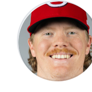

The line

Andrew AbbottStrikeoutsMore 2.5Built for people, not betting experts
Propeller Picks is an AI-assisted player prop research tool that turns matchup, recent role, and line context into plain English.
Get the mobile app · iOS + Android Use it on the web →Historical prop-analysis rows include repeated snapshots and retrospective data. They are not unique customer bets or proof of future results.

Andrew AbbottStrikeoutsMore 2.5Clear context.
One simple score.
DFS & pick’em research. No wagers accepted.
Go deeper with the full research workspace on the web. Check saved props and key research on your phone.


No. Propeller is a research and analysis tool. We do not accept wagers or place bets for users.
The public archive has two units: raw graded analysis rows and entries retained after the current API collapse rules. It includes repeated snapshots and legacy retrospective data, so it is not a uniquely published forward-test or ROI record.
The desktop web app is built for deeper slate research. Mobile is for quick checks, saved props, alerts, and digest workflows when you are away from the desk.
Yes. Review the historical graded analysis rows, the separate First-observed capture, and how Propeller works. The current ledger does not independently verify event-start ordering or outcome timing. You can also read our AI research transparency benchmark.
—Waiting for eligible completed picks.00.00uRecord updates after eligible results settle.353KCollapsed ledger entriesUpdated historical snapshotPropeller is a sports analytics and information service. Confidence Scores are directional research signals, not win probabilities or guarantees. Propeller does not accept or place wagers.